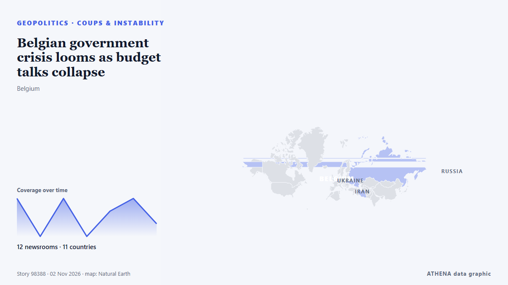

Coups & instability
SponsoredPresented by  Cybernetics and Artificial Intelligence Lab Welcome to the Cybernetics and Artificial Intelligence Laboratory, established at the Department of Business Administration of the National
Cybernetics and Artificial Intelligence Lab Welcome to the Cybernetics and Artificial Intelligence Laboratory, established at the Department of Business Administration of the National
| 20 Oct | 0 |
|---|---|
| 21 Oct | 0 |
| 22 Oct | 0 |
| 23 Oct | 0 |
| 24 Oct | 0 |
| 25 Oct | 0 |
| 26 Oct | 0 |
| 27 Oct | 1 |
| 28 Oct | 0 |
| 29 Oct | 0 |
| 30 Oct | 2 |
| 31 Oct | 0 |
| 1 Nov | 0 |
| 2 Nov | 1 |

Belgian government crisis looms as budget talks collapse
Belgian Prime Minister Bart De Wever was set to hand in his resignation on Monday, following late-night coalition talks that failed to reach a compromise on budget cuts, Belgian media reported. from Cyprus Mail
6.0Importance
3.3Risk · moderate
87%Confidence
Elsewhere in Geopolitics, Politics & Security
More ›The other sub-sections of Geopolitics, Politics & Security right now.